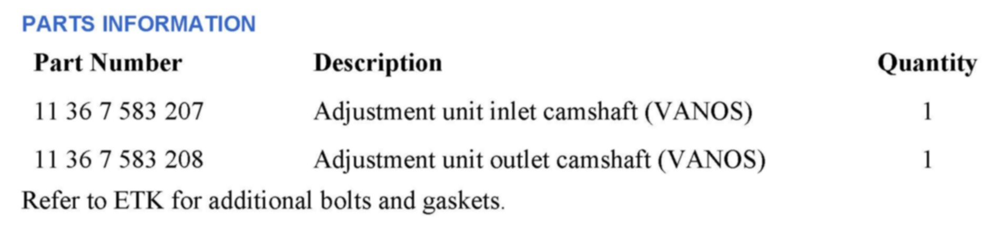
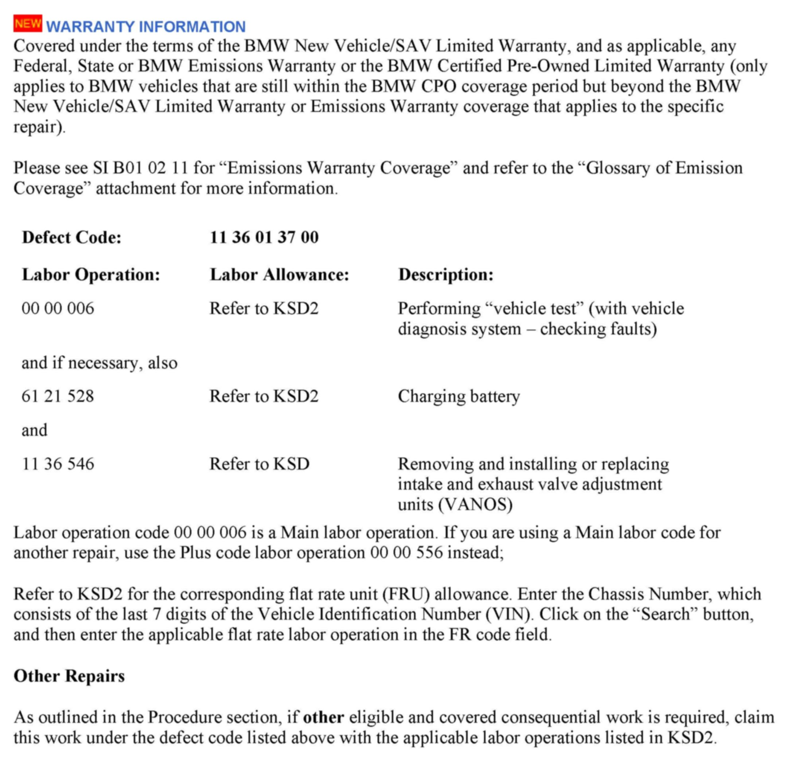

Engine Controls - Camshaft Position/VANOS DTC's, MIL ON
SI B12 14 12Engine Electrical Systems
August 2012
Technical Service
This Service Information bulletin supersedes SI B12 14 12 dated July 2012.
[NEW] designates changes to this revision
SUBJECT
N55 Engine: Various Faults Stored in DME Related to VANOS and Camshaft Position
MODEL
E70
E71
E82 and E88 135i
E90, 92 and E93 335i
F07 535i
F10 535i
F12 and F13 640i
F25
SITUATION
A rattling noise can be heard from the engine compartment; the engine has
a loss of power; and the Service Engine Soon lamp is illuminated. One or more of the following faults may be stored.
E70, E71, E82, E88, E90, E92 and E93:
2D5A - VANOS, intake: control fault, camshaft sticking
2D5B - VANOS, intake: control fault, position not reached
2D60 - VANOS, exhaust: control fault, camshaft sticking
2D61 - VANOS, exhaust: control fault, position not reached
2D9F - camshaft input sensor: signal implausible
2DA1 - Camshaft exhaust sensor: signal implausible
300C - Camshaft input sensor: signal high
300D - Camshaft input sensor: signal low
300E - Camshaft exhaust sensor: signal high
300F - Camshaft exhaust sensor: signal low
F07, F10, F12, F13 and F25:
130104 - VANOS, intake: control fault, camshaft sticking
130108 - VANOS, intake: control fault, position not reached
130304 - VANOS, exhaust: control fault, camshaft sticking
130308 - VANOS, exhaust: control fault, position not reached
130E11 - Camshaft input sensor: signal implausible
130F11 - Camshaft exhaust sensor: signal implausible
164020 - Camshaft input sensor: signal high
164021 - Camshaft input sensor: signal low
164030 - Camshaft exhaust sensor: signal high
164031 - Camshaft exhaust sensor: signal low
CAUSE
One or both (intake and/or exhaust) of the VANOS gear assemblies have failed; the attaching bolts may have also loosened and/or broken.
PROCEDURE
1. Replace both VANOS gear assemblies. Refer to Repair Instruction 11 36 046 "Removing and installing or replacing intake and exhaust camshaft units (N55)."
2. If the bolts have been found broken, the missing portions of the bolts will need to be retrieved from the engine before the final repairs are made. This additional work may include removing the engine oil pan, and a close examination of the timing chain drive to retrieve the missing parts. Refer to the applicable repair instructions for oil pan removal procedures.
Replacement of the parts described in the bulletin does not require TeileClearing Authorization.

PARTS INFORMATION

[NEW] WARRANTY INFORMATION